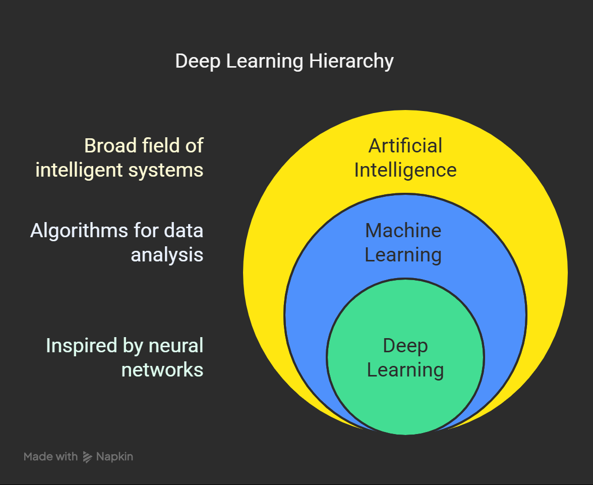

What is Deep Learning?
Deep Learning is a subfield of Artificial Intelligence and Machine Learning inspired by the structure of the human brain. It involves creating algorithms called Neural Networks that mimic the way humans learn and process data.
These algorithms analyze data with a logical structure, enabling them to draw conclusions similar to those a human might. Neural Networks consist of layers of interconnected nodes that process data iteratively.
Like Machine Learning algorithms that find a hypothesis function using statistical techniques, Deep Learning achieves this through the use of Neural Networks. The layers in Neural Networks—Input Layer, Hidden Layers, and Output Layer—form the backbone of this learning process.
Deep Learning Structure
Neural Networks are composed of three main components:
- Input Layer: Accepts raw data as input.
- Hidden Layers: Perform the bulk of computation using weights and activation functions. Each layer refines the data further.
- Output Layer: Produces the final predictions or classifications.
The Perceptron, a fundamental unit of a Neural Network, consists of:
- Weights: Determine the importance of input features.
- Activation Function: Decides whether a neuron should be activated based on input signals.
- Bias: Provides additional flexibility to shift activation functions.
The combination of multiple perceptrons creates Hidden Layers, which are the key to discovering intricate patterns in data.

"Deep" in Deep Learning implies the number of hidden layers in the Neural Network
- Convolutional Neural Networks (CNNs): Neural Networks used for images
- Recurrent Neural Networks (RNNs): Neural Networks used for Speech and Text
- Generative Adversarial Networks: Neural Networks that generate text and images
Why is Deep Learning getting so famous?
- Computer Vision
- Natural Language Processing
- Robotics
- Finance & Business
- Healthcare & Biomedicine
- Generative AI
- Self-Driving Cars
- Performance of deep learning models have been fantastic across all the domains. For example, AI Agent won 4 out of 5 games against human experts
Deep Learning Definition 2: More Technical
Deep Learning is a part of a broader family of machine learning methods based on Artificial Neural Networks with Representation Learning
Deep Learning Algorithms uses multiple layers to progressively extract higher level features from raw input. For example, in image processing, lower layers may identify edges, while higher layers may identify the concepts relevant to a human such as digits or letters or faces
Representation Learning or Feature Learning allows a system to automatically discover the representations needed for feature detection or classification from raw data
This replaces manual feature engineering and allows a machine to both learn the features and use them to perform a specific task.

Difference between Deep Learning and Machine Learning
- Deep Learning required more data